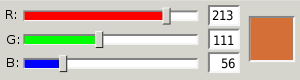

RGB values still range from 0 - 255. However, now there are three values per pixel rather than just one: red, green and blue. Each pixel can have any combination of red, green and blue within this range, producing the spectrum of colors below.
RGB is additive color, menaing that the sum of all colors at full intensity is white (255, 255, 255). Absence of color is black (0, 0, 0).
Play with the sliders below to make your own RGB colors!
1. Make a light color
2. Make 3 different shades of grey
3. Make a dark color

R:
G:
B:
Why use RGB?
RGB and the Human Visual System
The human eye has light receptor cells (called cones) specialized for recieving red, green and blue color stimuli. Every color that we see can be expressed as some combination of these three colors. White light is the full strength combinaton of all three (255, 255, 255). [Tanimoto]
"The choice of primary colors is related to the physiology of the human eye; good primaries are stimuli that maximize the difference between the responses of the cone cells of the human retina to light of different wavelengths, and that thereby make a large color triangle.[3]"-- wikipedia. Light is additive, meaning that pure white light is the sum of light of all the different hues.
Just like cones, a camera sensor also includes red, blue and green-specific sensors.
How an Image is Captured
Light enters the camera through a lens. It is then focused onto the photo plane and recorded by an image sensor. The image sensor records the intensity of light that hits each sensor component, or photosite. Each photosite accumulates a charge from the incoming light based on the strength and duration of light exposure. (For example, brighter portions of an image result from higher-charged photosites than their dimmer companions). The accumulated charge is then trasferred to a storage area directly adjacent to the photosite. Analog-to-Digital conversion then occurs, as the accumulated charge magnitudes are translated to digital numerical data. The image is now simply a collection of numbers. [photo?]This data is passed through the in-camera image processor, where image compression into any variety of file formats can occur, as well as any in-camera adjustments, such as a light contrast tone curve. After processing, the image is saved to the camera storage device (for example, a memory card). This image data can be read from the memory card by a computer for later use.
Image Data and Manipulation
More on Image Processing
Rarely do we see images that are light data directly from the camera. Instead, image processing, or adjustments of these values, normally occurs. Every standard file type (png, jpeg, gif) is a compression of the original data. This has practical implications: A jpg image may be 3MB whereas the raw camera image is 43 MB. The more visually apparent examples of image processing come in image editing. These include: in-camera adjustments such as the (wand) on your iPhone, instagram, iPhoto and Photoshop.
Once the image is recorded, the charge accumulated at each photosite is electrically transferred to a small storage area next to each photosite. From there, each stored charge magnitude is converted to a numerical representation by an analog-to-digital (A/D) conversion circuit. We now have our image data: numerical representations of light intensity.These values are then stored on a memory card, transferred to a computer, and/ or opened in an image editing program.
Each photosite accumulates electric charge depending on the strength and duration of exposure to light. Brighter portions of an image result from higher-charged photosites than their dimmer companions.
Digital and analog cameras alike create images by capturing light through an optical lens and then focusing it into an image on a picture plane.
When an image is recorded, RAW pixel data is captured by the sensor. This data must be synthesized and quantized. This is where image compression comes in. In order to simulate how our eyes process environmental light, cameras and editors alter image data. Image tones may be pulled into a certain range. A pleasing S-Curve may be applied to the image tones to increase contrast, for example. If a camera is not shooting in RAW, it must convert the image data. JPEG is the most widely used file format. Most cameras apply some sort of tone curve before JPEG compression.A tone curve is applied because a camera reads light data linearly, while the eye reads light logarithmically. The eye is more sensitive to lower light levels than to brighter levels. As a result, the in-camera tone curve often lightens the darks to bring out more detail, simulating the original scene seen by the eye.